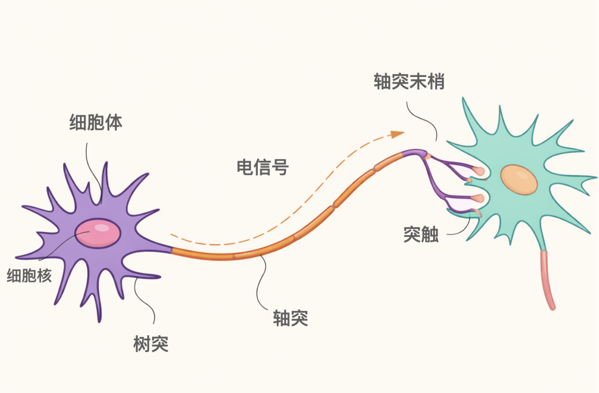
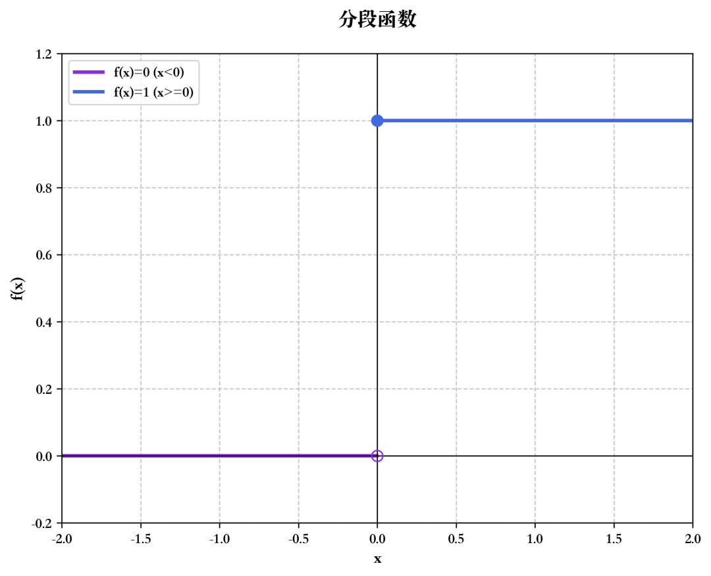
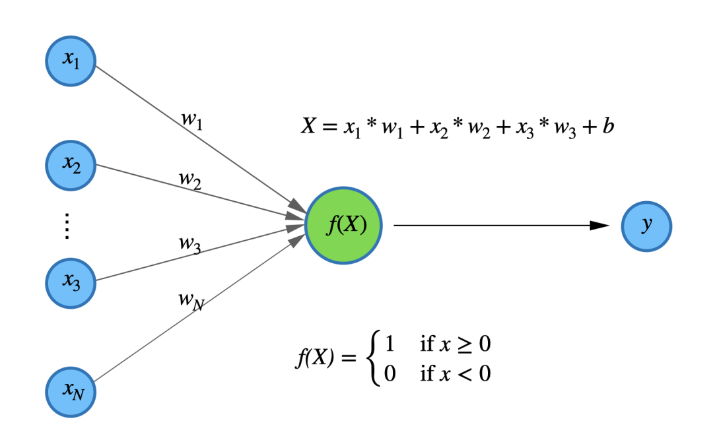
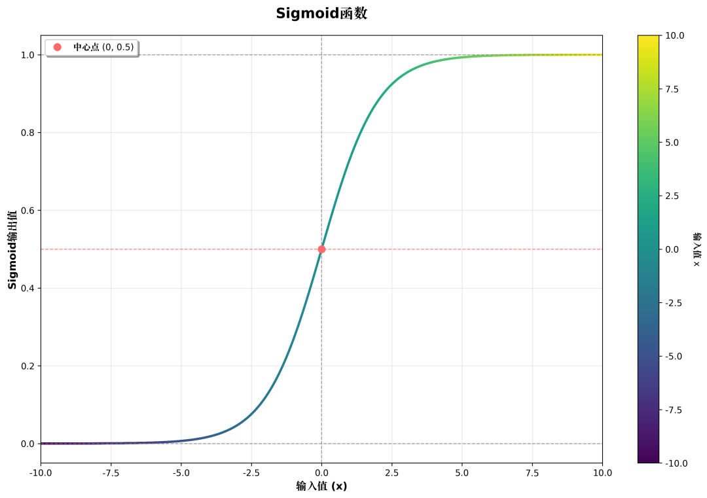
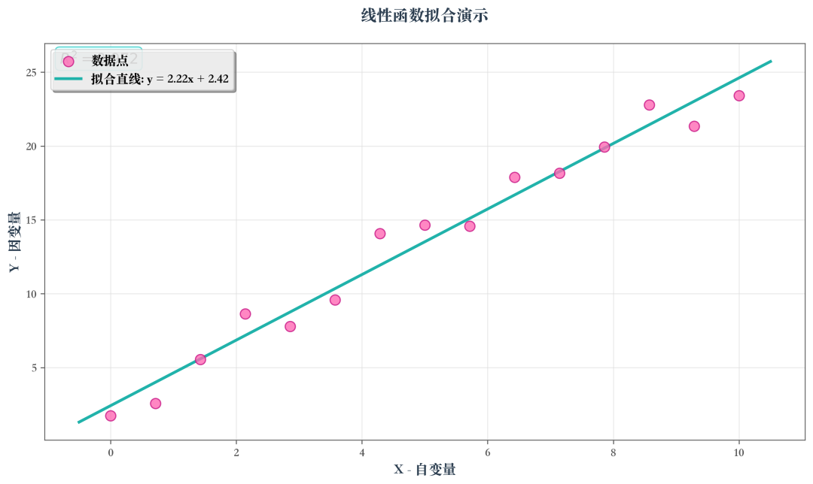
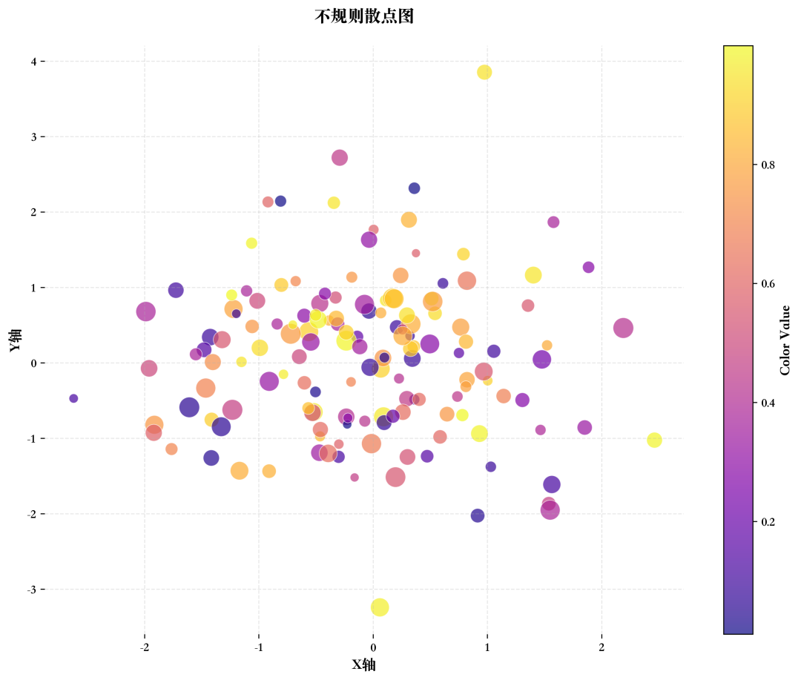
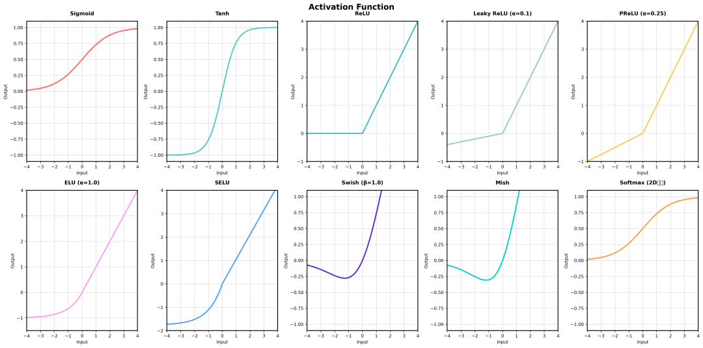
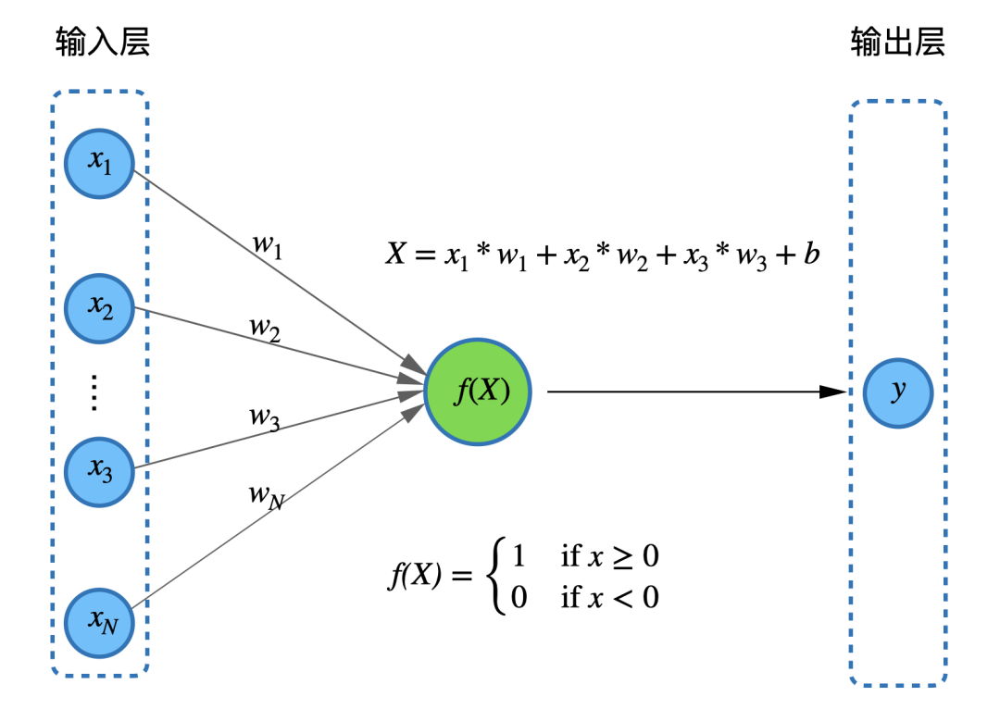
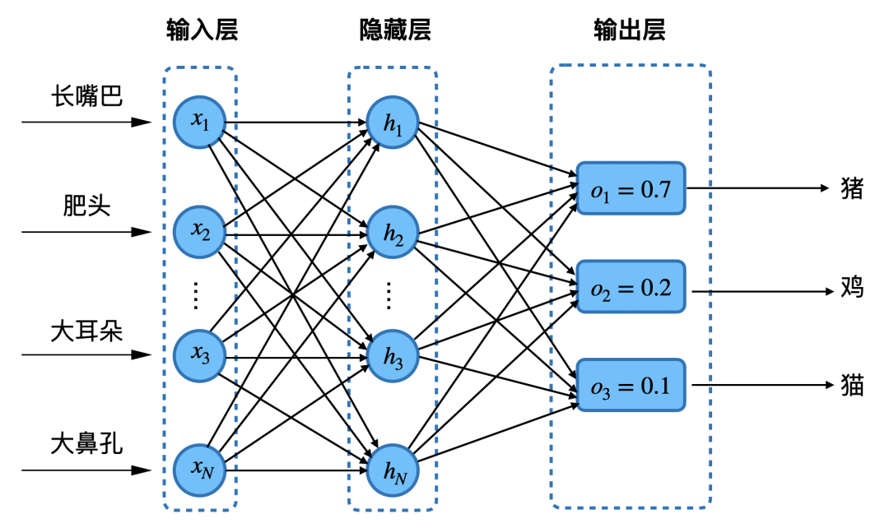
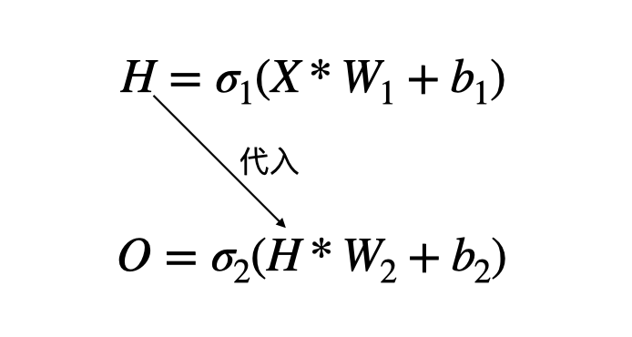

“AI永远不会像人类，就像飞机不是鸟类；警惕超级智能。” --尤瓦尔·赫拉利
20世纪40年代，电子计算机才刚刚诞生不久，科学家们都在努力探索怎样让计算机变得更“聪明”的方法。
有一位名叫沃伦·麦卡洛克（Warren McCulloch）的神经生理学家，他整日沉浸在对大脑神经元的研究中。他着迷于大脑是如何处理信息、产生思维和控制行为的。
与此同时，年轻的数学家沃尔特·皮茨（Walter Pitts）对逻辑和计算有着独特的见解。一天，麦卡洛克和皮茨相遇了。他们在交流中发现，彼此的研究领域似乎有着奇妙的联系。
麦卡洛克向皮茨描述了神经元的工作方式：神经元就像一个个微小的信息处理器，它们通过接收其他神经元传来的信号，当信号强度达到一定阈值时，就会被激活并向其他神经元发送信号。
皮茨听后，脑海中突然闪过一个灵感：能不能用数学和逻辑的方法来模拟神经元的这种工作方式，从而创造出一种全新的计算模型呢？于是，两人开始了紧密的合作。
他们日夜钻研，尝试用数学公式来描述神经元的行为。经过无数次的尝试和失败，他们终于在1943年提出了一种简单的神经元模型--MP模型。这个模型虽然很基础，但却像是在黑暗中点亮了一盏明灯，为后来神经网络的发展奠定了基石。
然而，在当时，这个概念太过超前，并没有引起太多人的关注。但麦卡洛克和皮茨并没有气馁，他们坚信自己的研究有着巨大的潜力。时间来到了1957年，一位叫弗兰克·罗森布拉特（Frank Rosenblatt）的心理学家出现了。
他在MP模型的基础上，提出了一种名为“感知机”的神经网络模型。感知机就像是一个有学习能力的小家伙，它能够通过调整自身的参数来识别简单的图像模式，比如区分圆形和方形。
罗森布拉特还设计了一个有趣的实验，让感知机通过摄像头识别不同的物体，这在当时引起了轰动。人们开始意识到，这种模拟大脑的计算模型或许真的能让计算机拥有智能。
至此，感知机诞生了，它加速了以神经网络为代表的深度学习算法时代的到来，神经网络的核心思想是模拟人脑神经元的工作原理。
下图所示为神经元基本生物学结构。神经元细胞体的核心是细胞核，细胞核周围围绕着树突。树突接受外部刺激，并将信号传递至神经元内部。

细胞体汇总不同树突接收到的刺激，当刺激达到一定程度时，就会激发细胞的兴奋状态；否则，细胞处于抑制状态。
这是非常关键的一句话！因为它是深度学习的非常重要的核心原理之一。
我们可以联系初高中的数学知识来理解这句话的含义，我们看下这个最简单的分段函数，当 x<0时，y一律等于0，当x > 0时，y一律等于1，这种函数也称作阶跃函数：

通过阶跃函数我们可以模拟神经网络对事物实现简单的分类，如下图，输入的 $x₁,x₂,…,x_N$ 类似于接收到的神经信号，然后这些输入信号分别乘以各自权重 $w₁, w₂....,w_N$（类似一元一次方程的系数 k ）和 偏置 $b$（类似于一元一次方程的截距 $b$），再通过求和汇集到一起得到 $X$ 。接着，$X$ 值再输入到一个函数 $f(X)$ ，即阶跃函数得到最终的输出值 $y$，如下图：

通过上面这种方式我们就可以实现简单的分类，如果从脑神经科学的角度，我们可以说这个信号 $X$ 是否需要继续往后处理了，这个就是你以前在入门AI的时候经常听到的大名鼎鼎的“感知机”了。
但是这种基于阶跃函数的感知机有个缺点，它难以捕捉信号的细微变化，例如，“57%信号强度”和“99%的信号强度”在阶跃函数看来都是1，它是一种“非黑即白”的价值观，这种价值观和现实世界的事物运转逻辑肯定是相悖的，它的表达能力不行。
因此我们需要一种能够捕捉现实事物更加细微变化的函数，它就需要表现的更加“灵敏”，所以它的表达能力也是更强的。比如下面这一种称之为sigmoid的函数：

这种函数称之为激活函数，通俗的理解为“达到某个条件”时，就会“激活”。深度学习相较于上一课我们提到的机器学习的强大的原因也在于此，想想看，这种非线性变化的函数相比于上一节课提到的线性函数的具备什么样的优势？
它不再是一条死板的直线，而是能出现非线性的变化，模型的表达能力自然就变强了。
继续看看下面这幅图，图中的“数据点”被一个线性函数清晰的“串”起来了，专业的术语叫做“拟合”起来了。

但是假如“数据点”是这种散点呢，弯弯曲曲的，甚至在更高的维度，比如三维、四维空间中，线性回归函数还能拟合吗？

肯定是不行的，这个时候线性函数就无法拟合了。因此非线性变化的激活函数就起作用了，因为它的表达能力更强，所以它可以通过组合各种激活函数和多层感知机，能拟合非常复杂的数据分布情况。
线性回归函数属于机器学习的的关键组件，而激活函数属于深度学习的的关键组件，所以深度学习比机器学习具备更加强大的数据拟合能力。
下面是各类激活函数，我们暂时只需要了解，不做深究，混个脸熟即可：

我们详细介绍了激活函数，那激活函数和我们提到的感知机的关系是什么？它们组合起来可以得到更加强大的感知机吗？答案是肯定的。
我们之前在单层感知机中提到过，神经信号 $x₁,x₂,…,x_N$ 作为输入，经过阶跃函数 $f(x)$ 处理，最终的得到输出值 $y$ 。现在我们将 $x₁,x₂,…,x_N$ 的集合命名为“输入层”，而最终的结果 $y$ 命名为“输出层”，这样我们就得到了“层”的概念。

为什么要提出层的概念，因为我们人类的大脑其实是分为多个皮层的，浅层的神经元负责提取事物的特征，而深层的神经元负责整合这些特征，形成高级认知。
比如我们的人眼在观察一副人脸照片的时候，浅层神经元负责提取眼睛、鼻子、耳朵等的形状特征，然后深层的神经元最终会组合这些特征来唤醒记忆，从而判断这个人是谁。
深度学习模仿了这个过程，后面的章节将会介绍到的计算机视觉技术，其实也是模仿了上述过程。
此外，我们提到的激活函数：sigmoid激活函数，也是模仿人类大脑的神经元的“放电”行为。
现在我们就对单层感知机进行“改造加工”，我们增加更多的层，并将“阶跃函数”改为“激活函数”，这样就得到了多层感知机，英文名为MLP（Multi-Layer Perceptron）。
下面是一个具有三层网络结构的神经网络，接受输入数据的那一层我们称之为输入层，中间所有的层我们称之为隐藏层，最后一层我们称之为输出层。

像这样，每层的每个神经元和都和下一层的每个神经元进行连接，这种连接方式称为全连接，这种层称之为全连接层，而这种结构我们称之为多层感知机结构。
其中输入数据：$x₁,x₂,…,x_N$ 各个特征组成的集合我们定义为 $X$，称之为输入层；而 $h_1,h_2,h_3,...,h_N$ 函数组成的集合我们定义为 $H$，称之为为隐藏层；而 $o_1,o_2,o_3$ 组成的集合我们定义为 $O$ ，称之为为输出层，它们之间存在以下关系：

其中 $σ_1$ 为 $sigmoid$ 激活函数， $σ_2$ 为 $Softmax$ 激活函数，$W_1$ 为输入层的权重参数，$W_2$ 为隐藏层的权重参数。
多层感知机是神经网络的一种具体类型，而神经网络是一个更广泛的概念。
神经网络包含了各种不同架构和功能的模型，而多层感知机只具有较为简单的全连接结构，每个神经元都与下一层的所有神经元相连，没有考虑数据的特殊结构，在处理一些复杂任务时可能表现受限。
其他类型的神经网络，如CNN能利用数据的空间结构，RNN能处理序列数据，在各自擅长的领域表现更优。
以下是当今最受广泛关注的神经网络结构的一些特点和各自擅长的领域，大家只需要做个了解，不需要深入研究。
| 网络类型 | 结构特点 | 适用场景 |
|---|---|---|
| 前馈神经网络（FNN） | 神经元分层排列，信息从输入层依次向前传播到输出层，每层神经元只与下一层神经元相连。 | 适合处理模式分类、回归预测等问题，如手写数字识别、房价预测等。 |
| 卷积神经网络（CNN） | 包含卷积层、池化层和全连接层，通过卷积核在数据上滑动进行卷积操作，提取数据的局部特征。 | 在图像识别、目标检测、图像分割等计算机视觉领域表现出色，如人脸识别、自动驾驶中的道路识别等。 |
| 循环神经网络（RNN） | 神经元的输出可以反馈到自身或下一个时间步，能够处理序列数据，具有记忆功能。 | 适用于语音识别、语言模型、机器翻译等序列数据处理任务，如文本生成、股票价格预测等。 |
| 长短时记忆网络（LSTM） | 是一种特殊的循环神经网络，通过门控机制来控制信息的流动，能够有效地捕捉长期依赖关系。 | 在语音识别、语言理解等领域有较好的应用，如情感分析、对话系统等。 |
| 生成对抗网络（GAN） | 由生成器和判别器组成，生成器负责生成新的数据样本，判别器负责判断样本是真实的还是生成的。 | 可用于图像生成、图像风格转换、数据增强等任务，如生成逼真的人脸图像、将照片转换为艺术风格的图像等。 |
拟合：拟合是在建模过程中，通过不断调整模型参数，让模型的输出结果尽可能贴近真实数据分布、从而捕捉数据内在规律的核心过程。
神经网络：神经网络是模仿生物大脑神经元连接结构与信号传递机制的计算模型，由大量相互连接的神经元节点分层组成，可通过学习数据特征完成分类、预测、识别等任务。
单层感知机（SLP）：单层感知机是结构最简单的前馈神经网络，只包含输入层和输出层、没有隐藏层，是神经网络的最初形态，仅能解决线性可分的简单问题。
多层感知机（MLP）：多层感知机是经典的全连接前馈神经网络，由输入层、至少一层隐藏层和输出层构成，依靠层间全连接与非线性激活函数，能够处理复杂的非线性问题。
深度学习：深度学习是基于多层深度神经网络的高级机器学习技术，通过多层结构自动从海量数据中逐层提取抽象特征，无需人工手动设计特征即可完成复杂任务。